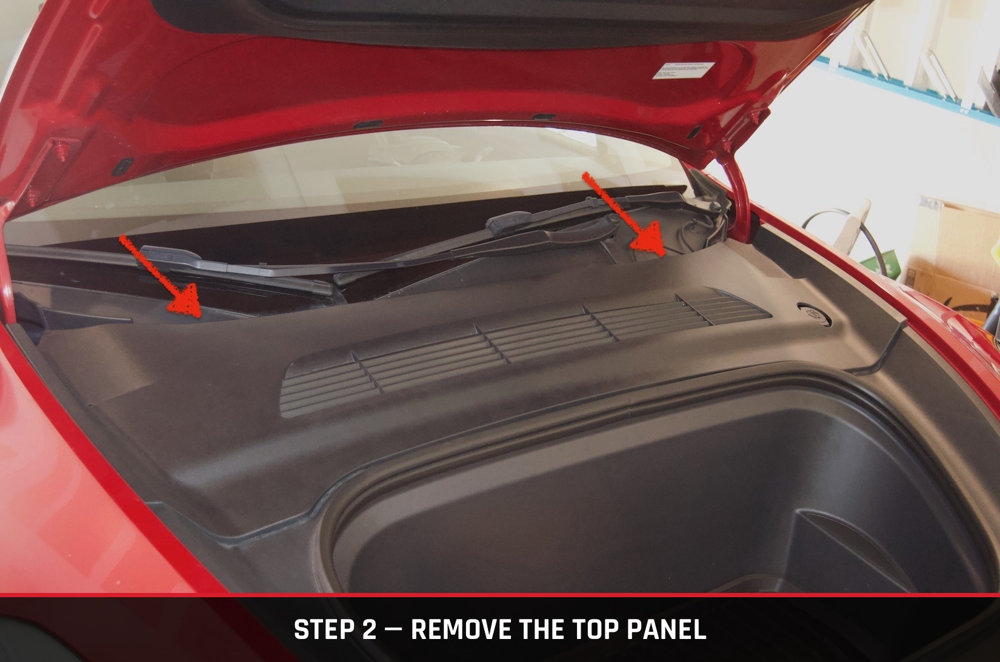
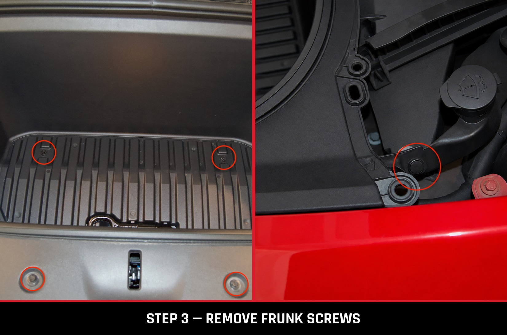
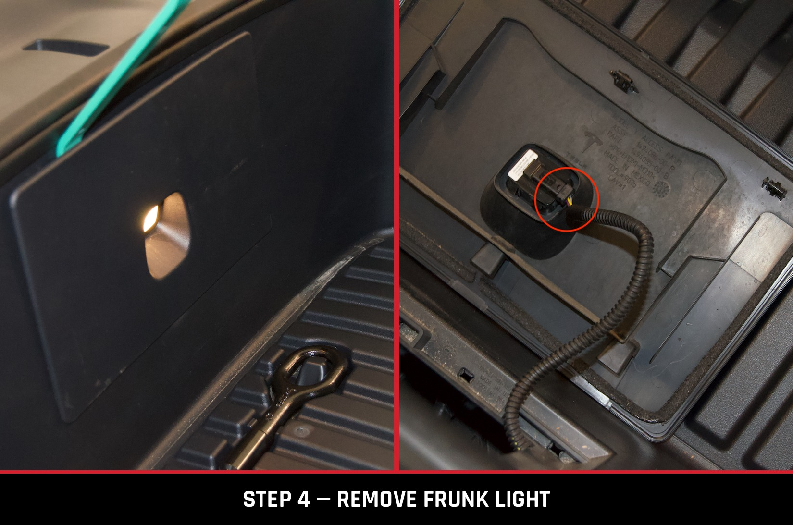
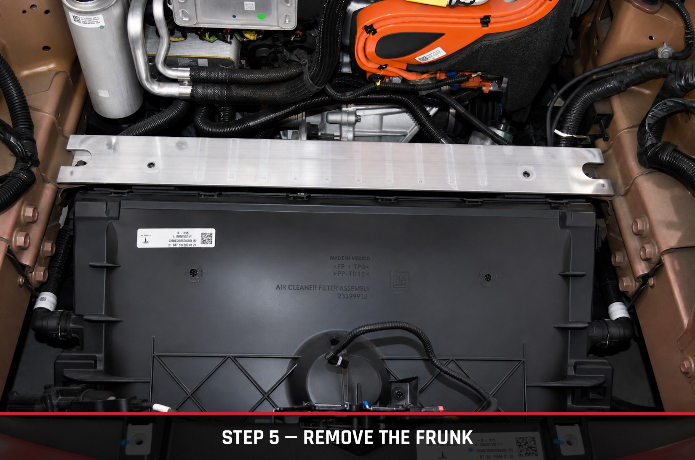
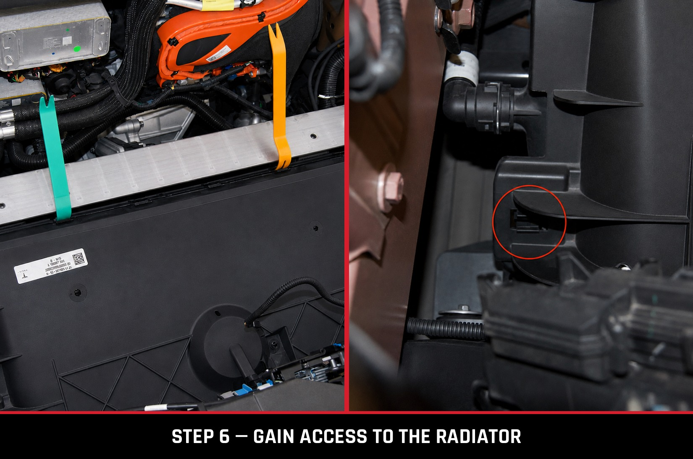
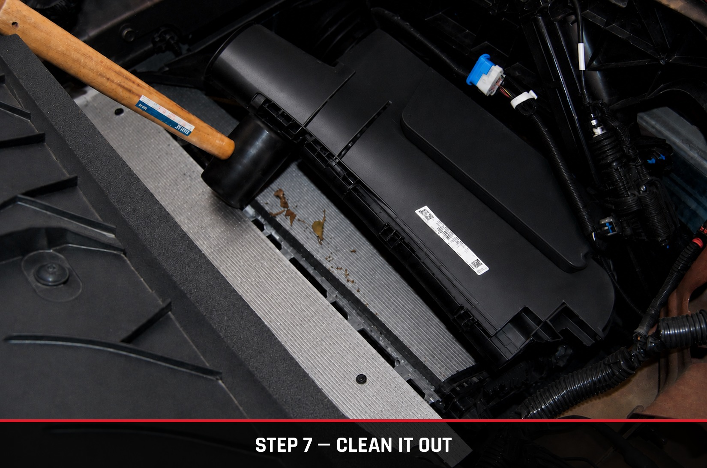

DIY / Maintenance / Radiator Cleaning
// DIY Guide
Leaves, bugs, and road debris build up behind the frunk over time and choke off airflow to the radiator. Here's how to get in there and clean it out yourself.

The Model Y's radiator sits behind the frunk, and over time it collects the kind of debris you'd expect from driving around outside — leaves, bugs, the occasional unlucky critter. That buildup blocks airflow, which means your AC and cooling system have to work harder than they should. This one takes a bit more disassembly than the other DIY guides on this site, but every step is straightforward with basic hand tools, and it'll save you a real trip to a Tesla service center.
Note: due to the quality and lighting of the images taken during the development of this specific DIY guide, AI editing was used to enhance and clean up some of the images.
Before doing anything else, make sure your AC is switched off from the touchscreen.
Remove the top panel covering the frunk filter housing. It's held on by a handful of plastic clips that stay attached to the cover itself rather than the car, so there's nothing loose to lose track of. Start on one side and lift gradually until you feel the clips pop free, then work your way across. Set the cover aside somewhere safe.

Using a 10mm socket, remove the four screws holding the frunk in place. There's also a clip on the driver's side — use a flathead screwdriver or plastic trim tool to lift within the opening until the clip pops free.

Near the front of the frunk sits the frunk light, and it needs to be disconnected before the frunk comes out. Insert a plastic trim tool near the top of the light housing and work your way around until the cover pops off. Once it's off, use a pair of pliers to disconnect the plug — do not pull on the wires. Set the light aside, or just leave it resting in the frunk.

After confirming the four screws are out, the clip is released, and the light is disconnected, lift up and remove the frunk. It's not heavy, just a little bulky. Keep an eye on the light's wiring so it doesn't get caught as you lift the frunk clear, then set it off to the side.

At this point, you're looking straight at the Model Y's radiator casing. Using a trim tool, start unclipping the six connections along the top.
It helps to work in two batches: release three clips on one side, leave the trim tool wedged in place, then move to the remaining three. If you work straight across in one pass, the clips you already released have a way of popping back into place before you finish — leaving the trim tool in place keeps that from happening.
Next, check each side of the radiator — you'll find two more clips per side. Grab a pair of needle-nose pliers and pinch each clip inward until you hear it release, then repeat on the opposite side in the same spot.
Once all the clips are free, give the radiator cover a gentle pull from the top. Assuming everything's unclipped, it should open right up and give you a clear look inside.

With the cover open, you'll see exactly what's been building up in there — leaves, bugs, the occasional unlucky critter. That's what you're here for. The radiator fins are extremely fragile, so there's no need to Hulk out and get aggressive. Use a shop vac and work gently, starting from one side and moving across, then down. A shop vac extension will help in this tight space. Propping the cover open with something small makes it easier to maneuver — just avoid anything large enough to stretch or stress the cover.

Once you're satisfied it's clean, reverse every step to put everything back together. Congratulations — you just made your Y more efficient, and saved yourself over $250 in Tesla labor charges for this maintenance.
Turn the car back on and confirm there are no alerts, and that your AC works normally. It should also run a bit quieter now that the gunk is gone. Head into your Service settings and reset the reminder for this maintenance.
If these steps saved you a trip to a Tesla service center, feel free to send a tip our way at venmo.com/bhaaaandari — it goes straight back into keeping modMY running and growing.
Steps above are based on a real, hands-on radiator cleaning performed on a Tesla Model Y. Tesla updates its manuals and hardware as new trims and running changes roll out, so always cross-check against Tesla's Owner's or Service Manual for your specific vehicle before you start.
This information is provided for reference only and does not replace Tesla's official documentation. modMY is not responsible for any damage, injury, or mechanical issues resulting from improper disassembly, damaged clips, lost hardware, or failure to follow proper procedure and safety precautions. Work on your vehicle at your own risk, and consult a qualified technician if you're unsure.